El sistema de verificación de línea de producción uno es una plataforma multifacética diseñada para optimizar y supervisar los procesos de producción en un entorno industrial. Este sistema integra una serie de módulos interconectados, cada uno destinado a funciones específicas, que permiten una gestión eficiente y exhaustiva en distintas áreas clave.
Interacción del usuario
La interacción del usuario en nuestro sistema se centra en un acceso ágil y simple mediante un proceso de inicio de sesión optimizado y un registro eficiente. Los usuarios exploran los módulos a través de un menú de navegación claro y directo, lo que les permite utilizar las herramientas específicas, como la gestión de recetas, la verificación de la línea de producción y la generación de informes, de manera rápida y sin complicaciones. Esta estructura busca maximizar la eficiencia y comprensión del sistema, ofreciendo una experiencia de usuario fluida y productiva.
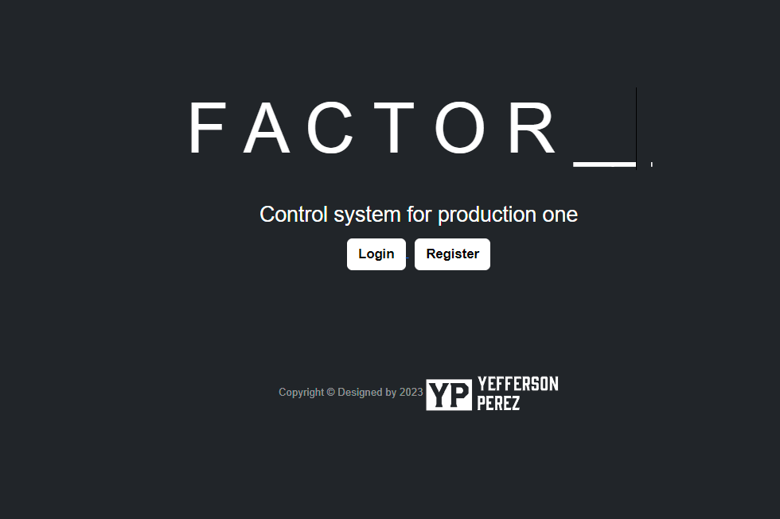
Home page
El usuario tiene la posibilidad de
El inicio de sesión requiere el ID Number (número de carnet) y la contraseña. Los usuarios acceden
al
sistema con su
identificación única y su contraseña asociada.
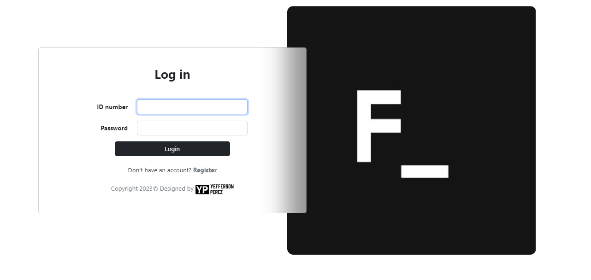
Login page
Para el registro, se completa un formulario con el nombre, apellido, ID Number (número de carnet),
contraseña y
confirmación de contraseña. Los nuevos usuarios proveen información personal y definen su acceso al
sistema
a través de
una contraseña segura.
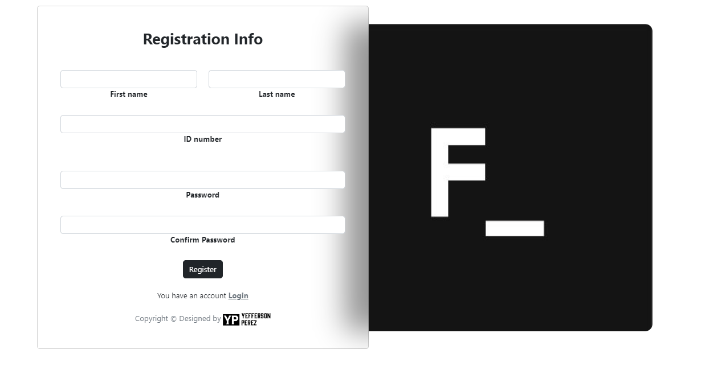
Register page
Al presionar un botón, se activa la alternancia de visibilidad del menú de navegación, permitiendo su
visualización o
despliegue dinámico. Esta función es controlada por la interacción del usuario con el botón,
ofreciendo un
método para
ajustar el espacio de visualización según las preferencias del usuario.
Alternancia dinámica del menu
En la esquina superior derecha, el usuario accede a la fecha y hora actuales. Además, se dispone de un
menú
desplegable
que muestra información personal, incluyendo nombre, apellido, número de identificación (carnet) y
estado de
actividad.
Este menú proporciona la funcionalidad para el cierre de sesión, permitiendo a los usuarios gestionar
su
cuenta y
acceder a sus datos personales de manera rápida y conveniente.
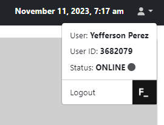
Gestión usuario
Módulo de Dashboard
El dashboard representa un panel informativo integral que permite supervisar y gestionar eficazmente las operaciones, proporcionando datos clave para la toma de decisiones estratégicas. Estructurado bajo una visualización central que ofrece una visión panorámica de la actividad dentro del sistema.
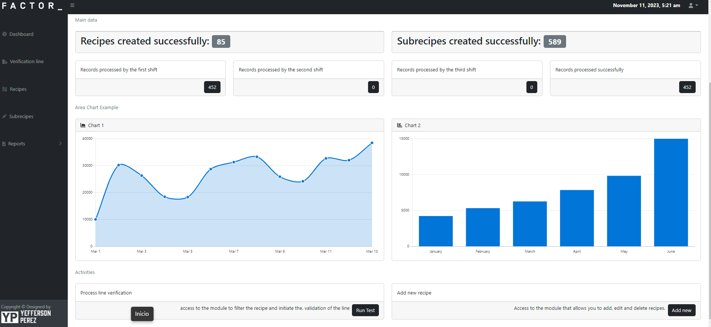
Módulo Dashboard
El usuario tiene la posibilidad de
Proporciona un recuento acumulado de todas las recetas
registradas en el
sistema. Esta
sección es fundamental para el seguimiento y análisis de la creación de recetas,
permitiendo un
control
exhaustivo de la
evolución de la base de datos de recetas.
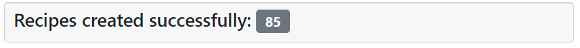
Recetas creadas exitosamente
Ofrece un recuento detallado de todos los ingredientes registrados,
ofreciendo una
visión específica de los elementos constituyentes de las recetas. Esto resulta
fundamental para el
control
de inventario
y la gestión de la producción.
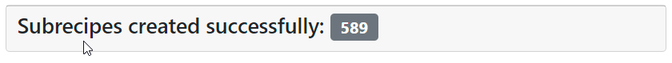
Subrecetas creadas exitosamente
Brinda una cifra total acumulada de todos los registros procesados a
lo largo de
los turnos. Tambien una cifra que representa la suma global de la actividad de
procesamiento y
constituye
un indicador
clave del
rendimiento general del sistema.
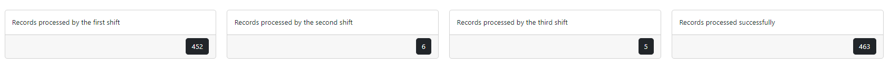
Registros procesados exitosamente
Esta sección actúa como un enlace directo al módulo 'Verificación
de Línea',
proporcionando acceso rápido y eficiente para realizar inspecciones y controles de
calidad específicos
en
la línea de
producción.
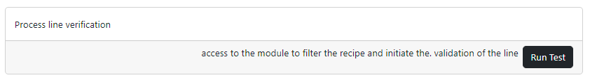
Acceso rapido al módulo: Verificación de la línea de proceso
Ofrece un acceso inmediato al módulo Recetas, permitiendo una integración fluida
y ágil para la incorporación de nuevos elementos al sistema de recetas.
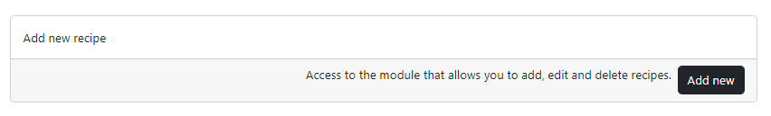
Acceso rapido al módulo: Recetas
Módulo de Verificación de Línea
Esta sección del sistema está diseñada para llevar a cabo inspecciones exhaustivas en una línea de producción. Este módulo está dividido en los siguientes componentes
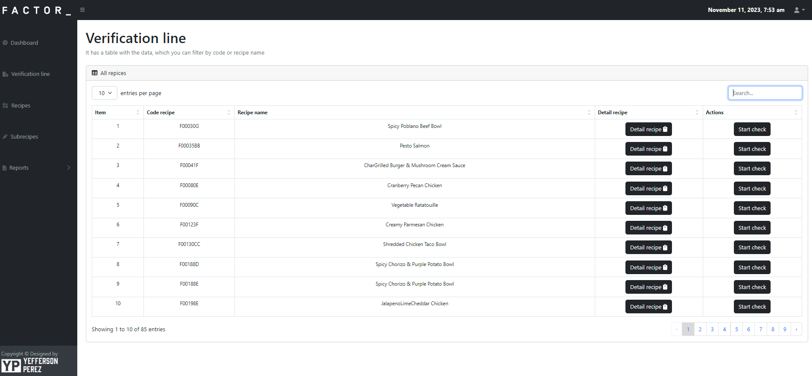
Módulo de Verificación de Línea
Primer componente
Permite la segmentación y visualización de datos basada en el código de la receta (Code
Recipe) o el nombre de la receta (Recipe Name). Esta funcionalidad posibilita la identificación
precisa de recetas
específicas para la verificación.
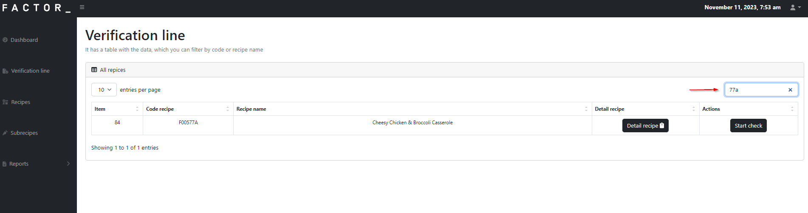
Login page
Activa una interfaz que despliega
información detallada de la receta seleccionada,
incluyendo la lista completa de ingredientes asociados a dicha receta. Esto facilita una comprensión
completa de los
componentes de la receta antes de la verificación.
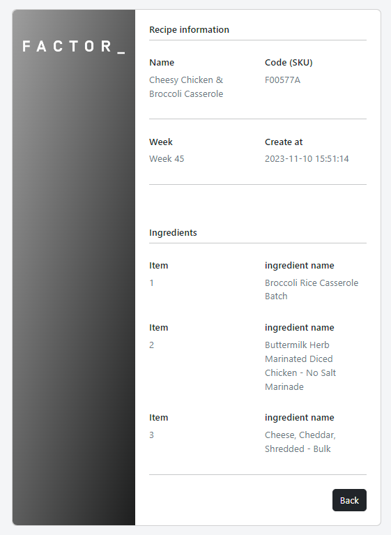
Detalle de Receta con ingredientes
Segundo componente
Permite la segmentación y visualización de datos basada en el código de la receta (Code
Recipe) o el nombre de la receta (Recipe Name). Esta funcionalidad posibilita la identificación
precisa de recetas
específicas para la verificación.
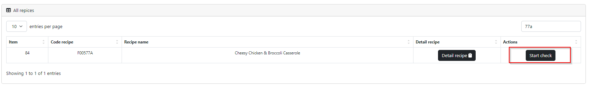
Iniciar verificación (Start Check)
La funcionabilidad de verificación de línea permite a los usuarios
realizar controles de calidad y verificaciones
específicas en una línea de producción. Este proceso consta de dos secciones principales.
Datos de Identificación del Verificador
- • Nombre de Calidad (QA Name): Nombre del usuario logueado encargado de la verificación.
- • Apellido de Calidad (QA Last Name): Apellido del usuario logueado.
- • Turno (Shift): Selección del turno específico para el cual se está realizando la verificación
(primer, segundo o tercer turno).
- • Número de Línea (Line Number): Campo para ingresar el número identificador de la línea que se
está
verificando.
- • Fecha (Date): Automáticamente registra la fecha y hora actuales del sistema al iniciar el
proceso de
verificación.
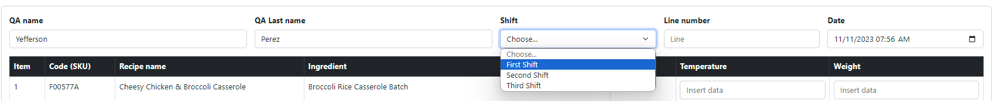
Datos Verificador
Detalles de Verificación de Ingredientes
- • Código (SKU) de la Receta.
- • Nombre de la Receta.
- • Ingrediente.
- • Validación de Ingrediente: Campo tipo check para validar la presencia del ingrediente en la
línea de producción..
- • Temperatura: Campo para registrar la temperatura relevante al momento de la verificación.
- • Peso: Campo para registrar el peso de la porción del ingrediente verificado.
Detalles de Verificación de Ingredientes
Una vez que se completa el proceso de verificación, al presionar el botón "Submit", se registra exitosamente la verificación realizada.Módulo de recetas
El módulo de Recetas proporciona una interfaz interactiva para la gestión de recetas. Está compuesto por diversas secciones y funciones que facilitan la creación, visualización y edición de recetas.
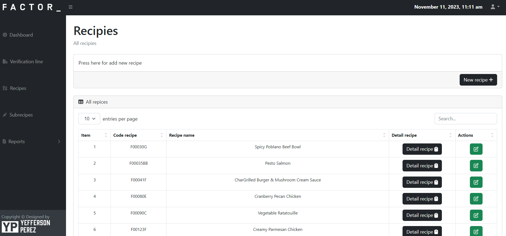
Módulo Dashboard
Sus características clave son las siguientes
Al presionar el botón "New Recipe + ", el usuario puede iniciar el proceso de incorporación de una
nueva receta al sistema.
Este proceso conduce al registro de la información esencial de la receta.
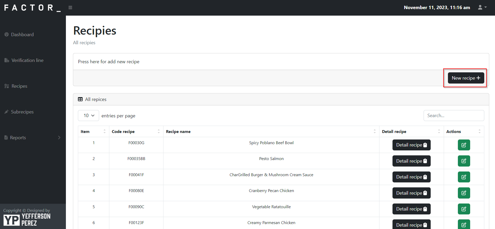
Agregar nueva receta creadas exitosamente
Se requiere el ingreso de los siguientes datos para la creación de una receta:
- • Nombre de la Receta (Recipe Name): Identificador descriptivo para la receta.
- • Código de Receta (Recipe Code SKU): Identificador único para la receta.
- • Semana (Week): Semana a la que pertenece la receta.
- • Fecha de Creación (Date): Fecha en la que se crea la receta en el sistema.
Registar receta
Ofrece una tabla que permite al usuario filtrar y visualizar las recetas existentes basadas en los siguientes campos:
- • Código de Receta (Recipe Code).
- • Nombre de la Receta (Recipe Name).
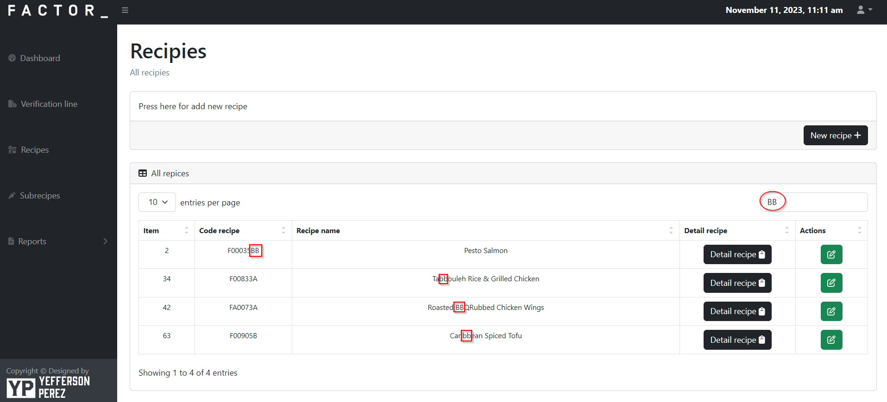
Tabla de dinámica de datos
La opción "Detail Recipe" permite acceder a una visualización detallada de la receta seleccionada,
mostrando todos los
componentes, proporciones y detalles específicos de la misma.
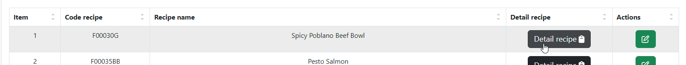
Boton detalle receta
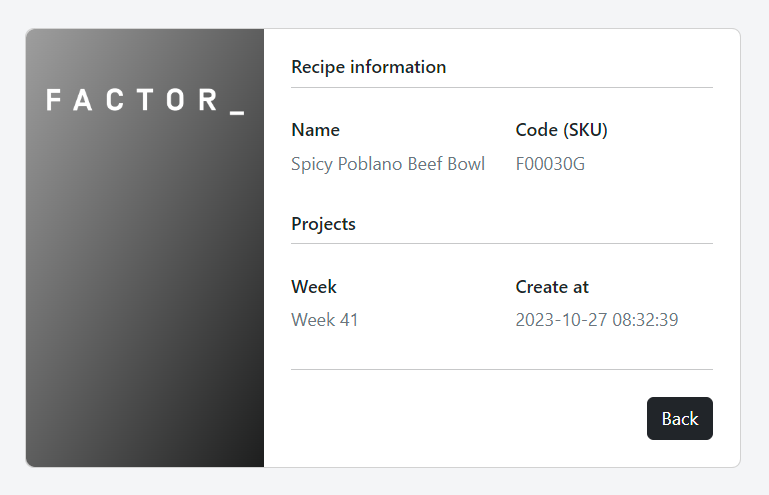
Vista detalle receta
Se proporcionan botones que permiten editar y eliminar recetas
existentes,
brindando al usuario la capacidad de modificar la información o eliminar una receta según sea
necesario
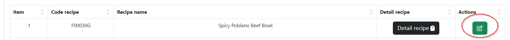
Edición de recetas
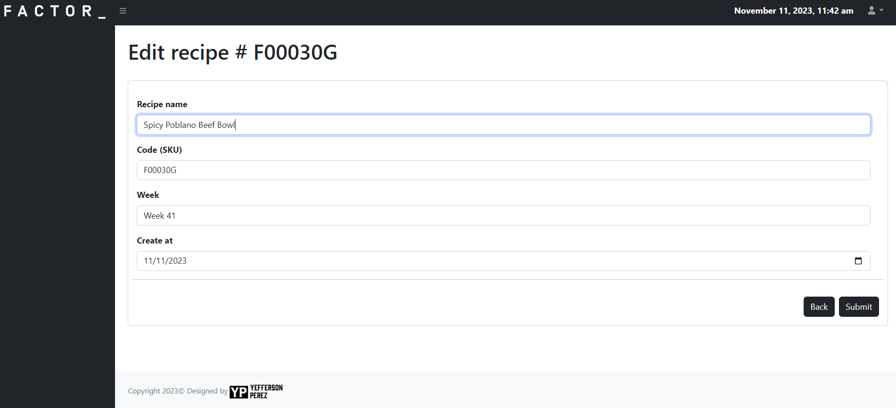
Vista editar de recetas
Por motivos de normalización de datos, estas funcionabilidades estarán inhabilitadas, salvo para aquellos usuarios que tienen la autorización, para la ejecución de estas actividades.
Módulo de Subrecetas
Este módulo permite la gestión de subrecetas, lo cual implica la posibilidad de agregar ingredientes a recetas existentes
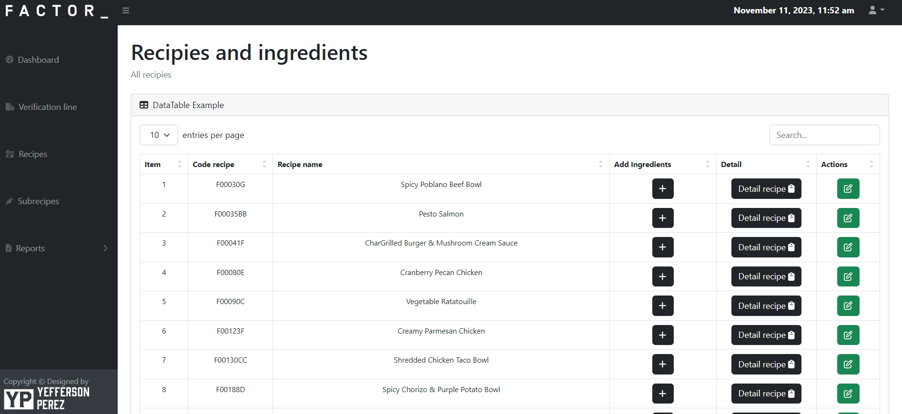
Módulo de Subrecetas
Sus funciones principales son las siguientes
Permite al usuario filtrar los datos por el código o nombre de la receta, facilitando la
identificación y selección de
la receta a la cual se desean agregar ingredientes.
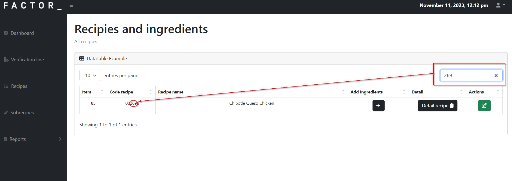
Módulo de sub-Recetas
Activa una interfaz que despliega
información detallada de la receta seleccionada,
incluyendo la lista completa de ingredientes asociados a dicha receta. Esto facilita una comprensión
completa de los
componentes de la receta antes de la verificación.
Detalle de Receta con ingredientes
Si la receta seleccionada ya cuenta con ingredientes asignados, se muestran en forma de lista para una
visualización
detallada. En caso de no tener ingredientes asignados, se muestra un mensaje indicando "No ingredients
assigned to this
recipe yet".
El proceso para agregar los ingredes de una receta es esl siguiente: Dentro de un entorno interactivo, se facilita la incorporación dinámica de ingredientes a la receta. Mediante un formulario, el usuario puede introducir el nombre del ingrediente. Al presionar el botón 'Add More', se genera un nuevo campo, brindando la flexibilidad de agregar múltiples registros de ingredientes según la necesidad del usuario.
Módulo de Reportes
La función primordial de este módulo es facilitar la generación de reportes detallados a partir de la información contenida en los módulos de Recipes, Subrecipes y Verification Line.
Cada sección ofrece
• Tabla Filtrable de Datos: Permite filtrar la información, lo que posibilita al usuario una
visualización específica
según sus necesidades.
• Opciones de Exportación: El usuario puede exportar la información de la tabla a formatos como
Excel, PDF o Word,
además de disponer de opciones para copiar e imprimir la tabla.
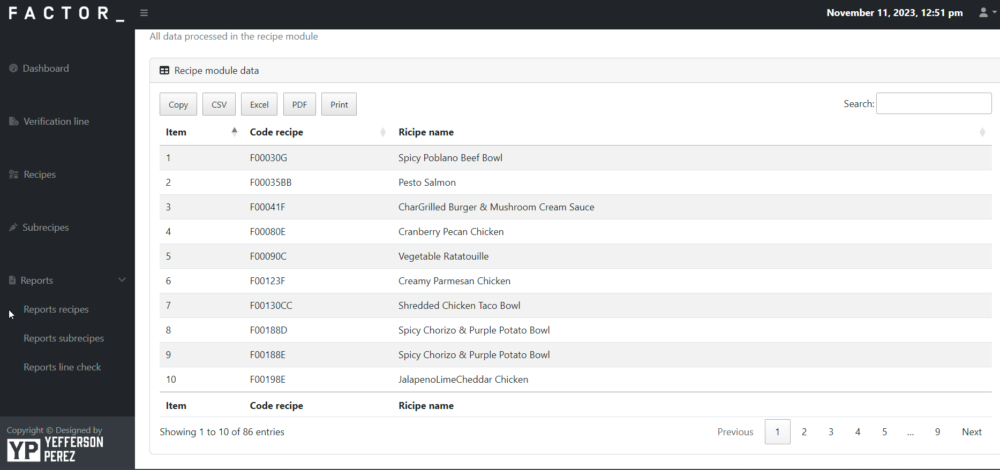
Reporte modulo Recetas
• Tabla Filtrable de Datos: Similar al módulo de Recipes, esta tabla permite filtrar la información de
las recetas y
también de los ingredientes que pertenecientes a la misma.
• Opciones de Exportación: Permite exportar los datos de la tabla en formatos Excel, PDF o Word, así
como copiar e
imprimir la tabla.
Reporte módulo Sub-recetas
• Filtros Avanzados: Permite filtrar datos por una variedad de campos, incluyendo QA Name, QA Last Name, Date, Time,
Shift, Line number, Recipe Code SKU, Recipe Name, Subrecipe, Ingredient Availability, Temperature, Weight y Comment.
• Opciones de Exportación: Permite exportar los datos de la tabla en formatos Excel, PDF o Word, así como copiar e
imprimir la tabla.
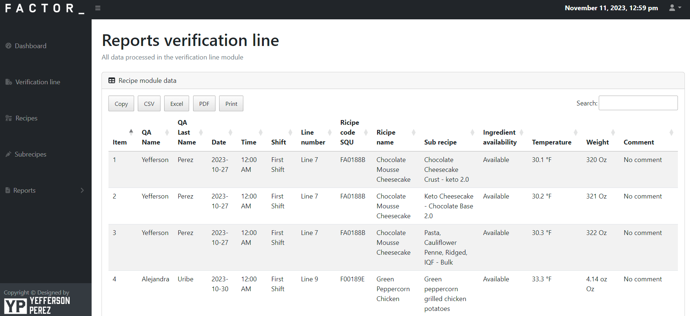
Reportes módulo verificación de linea